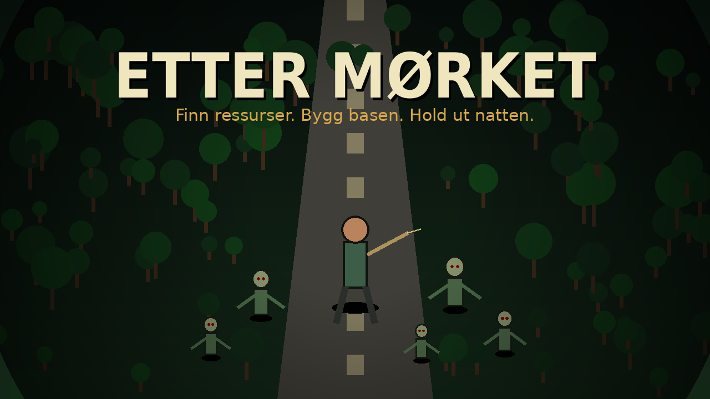

Top-down survival • crafting • basebygging
Etter Mørket
Du våkner ved et utbrent veikryss. Finn mat, vann og skrap. Bygg en base. Lag våpen. Hold ut når natten kommer.
Musikk og lyder starter etter første klikk, slik nettlesere krever.
Pause
Spillet lagres automatisk. Du kan også lagre manuelt før du lukker fanen.
Kontroller
WASD / piltasterBevegelse
ShiftSprint, bruker stamina
MusSikt
VenstreklikkAngrip / skyt / plasser bygg
ESamle, loot, bruk nærmeste objekt
CCrafting
BByggemeny
IInventory og status
F/V/HBruk mat / vann / førstehjelp
1–5Velg våpen
SpaceKort dodge
EscPause / lukk panel